Candidate List 20260819Last night — ZTF: 3,225 passed basic cuts (205 young) · LSST: 0 passed basic cuts (0 young)Previous Day Next Day
Section 1: New Sources (age<1d) Section 2: Old (1-5d) sources observed last nightplaceholder
Section 1: New Afterglow/FBOT Cands Last Night (1)
1. [ZTF] ZTF26abppxio (Afterglow?) [Back to Top] [Share] [Trigger Swift] [Fritz Alert] [Fritz Source] [Lasair]RA, Dec: 291.93698, -3.48528 19h27m44.88s, -3d-29m-7.00sGalactic (l, b): 33.96092, -9.66425 ext(g-r) = 0.48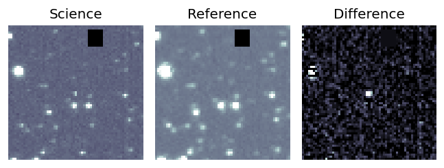
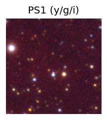

TESS: Sectors [54 81]
PS1: 1 source in 3 arcsec Closest: d = 4.48 arcsec photoz=0.25+/-0.05 peak abs mag = -22.16
LegacySurvey: 0 sources in 3 arcsec
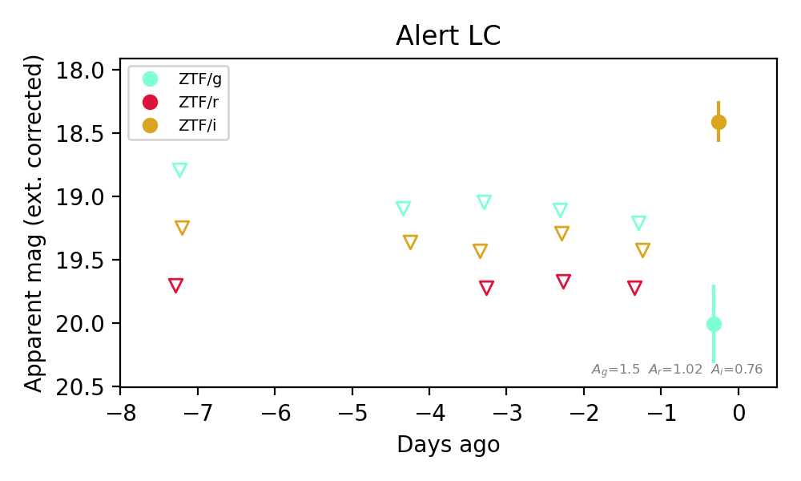
Extinction-corrected gi color:
From alerts: 1.6 +/- 0.35 mag
Consistent with synchrotron, g-r>0!
Rise Rate:
i: 1.03 mag/day
Fade Rate:
Section 2: Older Sources Observed Last Night (16)
0. [ZTF] ZTF26aboierm (Afterglow?FBOT?) [Back to Top] [Share] [Trigger Swift] [Fritz Alert] [Fritz Source] [Lasair]RA, Dec: 10.82279, 41.44748 0h43m17.47s, 41d26m50.93sGalactic (l, b): 121.29239, -21.39833 ext(g-r) = 0.388


TESS: Sectors [17 57 84]
PS1: 1 source in 3 arcsec Closest: d = 2.14 arcsec photoz=0.41+/-0.02 peak abs mag = -25.92
LegacySurvey: 0 sources in 3 arcsec

Extinction-corrected gr color:
From alerts: 0.09 +/- 0.06 mag
Consistent with synchrotron, g-r>0!
Rise Rate:
g: 1.21 mag/day
r: 0.95 mag/day
Fade Rate:
g: 0.28 mag/day
r: 0.3 mag/day
1. [ZTF] ZTF26abnozsn (Afterglow?) [Back to Top] [Share] [Trigger Swift] [Fritz Alert] [Fritz Source] [Lasair]RA, Dec: 330.39961, -0.84305 22h 1m35.91s, 0d-50m-34.98sGalactic (l, b): 58.5226, -41.54646 ext(g-r) = 0.08


TESS: Sectors [ 42 55 82 92 116]
NED host (10 arcsec):Found WISEA J220135.92-005035.1 (G, 0.3″); NED spec-z: z=0.1100 [zflag SLS]; peak abs mag = -19.44
PS1: 0 sources in 3 arcsec
LegacySurvey: 1 sources in 3 arcsec Closest: d = 0.32 arcsec, 141.1 deg (east of north) photoz=0.09 (68% bounds 0.08, 0.1), type=SER peak abs mag (ext. corrected) = -19.03 (68% bounds -18.61, -19.29)

Extinction-corrected gr color:
From alerts: 0.08 +/- 0.19 mag
Extinction-corrected gi color:
From alerts: -0.64 +/- 99 mag
Extinction-corrected ri color:
From alerts: -0.53 +/- 99 mag
Consistent with synchrotron, g-r>0!
Rise Rate:
g: 0.06 mag/day
r: 1.3 mag/day
Fade Rate:
r: 1.19 mag/day
2. [ZTF] ZTF26abohdvv (FBOT?) [Back to Top] [Share] [Trigger Swift] [Fritz Alert] [Fritz Source] [Lasair]RA, Dec: 324.13425, -0.34617 21h36m32.22s, 0d-20m-46.23sGalactic (l, b): 54.39078, -36.1459 ext(g-r) = 0.054


TESS: Sectors [55 82]
SDSS (<15 kpc):Found SDSS phot-z: z=0.25; peak abs mag = -21.60
PS1: 0 sources in 3 arcsec
LegacySurvey: 1 sources in 3 arcsec Closest: d = 0.46 arcsec, 236.9 deg (east of north) photoz=0.1 (68% bounds 0.07, 0.12), type=SER peak abs mag (ext. corrected) = -19.54 (68% bounds -18.69, -19.84)

Extinction-corrected gr color:
From alerts: -0.11 +/- 0.11 mag
Extinction-corrected gi color:
From alerts: -0.33 +/- 0.15 mag
Extinction-corrected ri color:
From alerts: -0.22 +/- 0.15 mag
Consistent with synchrotron, g-r>0!
Rise Rate:
g: 0.28 mag/day
r: 0.19 mag/day
i: 0.22 mag/day
Fade Rate:
3. [ZTF] ZTF26abohnal (FBOT?) [Back to Top] [Share] [Trigger Swift] [Fritz Alert] [Fritz Source] [Lasair]RA, Dec: 324.16608, 0.11457 21h36m39.86s, 0d 6m52.46sGalactic (l, b): 54.88401, -35.91311 ext(g-r) = 0.066


TESS: Sectors [55 82]
SDSS (<15 kpc):Found SDSS phot-z: z=0.20; peak abs mag = -20.72
PS1: 0 sources in 3 arcsec
LegacySurvey: 1 sources in 3 arcsec Closest: d = 0.89 arcsec, 268.3 deg (east of north) photoz=0.75 (68% bounds 0.32, 1.99), type=REX peak abs mag (ext. corrected) = -24.15 (68% bounds -21.93, -26.75)

Extinction-corrected gr color:
From alerts: -0.23 +/- 0.14 mag
Extinction-corrected gi color:
From alerts: -0.57 +/- 0.17 mag
Extinction-corrected ri color:
From alerts: -0.34 +/- 0.17 mag
Rise Rate:
g: 0.22 mag/day
r: 0.19 mag/day
i: 0.17 mag/day
Fade Rate:
4. [ZTF] ZTF26abpanks (Afterglow?FBOT?) [Back to Top] [Share] [Trigger Swift] [Fritz Alert] [Fritz Source] [Lasair]RA, Dec: 352.79839, -10.17866 23h31m11.61s, -10d-10m-43.17sGalactic (l, b): 70.98667, -64.61046 ext(g-r) = 0.026


TESS: Sectors [ 2 29 42 92]
SDSS (<15 kpc):Found SDSS phot-z: z=0.89; peak abs mag = -25.00
PS1: 0 sources in 3 arcsec
LegacySurvey: 1 sources in 3 arcsec Closest: d = 0.35 arcsec, 71.3 deg (east of north) photoz=0.8 (68% bounds 0.14, 1.63), type=REX peak abs mag (ext. corrected) = -24.73 (68% bounds -20.3, -26.62)

Extinction-corrected gr color:
From alerts: -0.43 +/- 0.17 mag
Extinction-corrected gi color:
From alerts: -0.53 +/- 0.16 mag
Extinction-corrected ri color:
From alerts: -0.11 +/- 0.14 mag
Consistent with synchrotron, g-r>0!
Rise Rate:
g: 0.69 mag/day
r: 0.47 mag/day
i: 0.41 mag/day
Fade Rate:
5. [ZTF] ZTF26abpbjfg (Afterglow?) [Back to Top] [Share] [Trigger Swift] [Fritz Alert] [Fritz Source] [Lasair]RA, Dec: 10.72016, 41.18279 0h42m52.84s, 41d10m58.04sGalactic (l, b): 121.19966, -21.66017 ext(g-r) = 0.415


TESS: Sectors [17 57 84]
PS1: 1 source in 3 arcsec Closest: d = 0.77 arcsec photoz=0.45+/-0.03 peak abs mag = -24.36
LegacySurvey: 0 sources in 3 arcsec

Extinction-corrected gr color:
From alerts: -2.07 +/- 99 mag
Rise Rate:
g: 0.49 mag/day
r: 0.89 mag/day
Fade Rate:
r: 0.97 mag/day
6. [ZTF] ZTF26abphsey (FBOT?) [Back to Top] [Share] [Trigger Swift] [Fritz Alert] [Fritz Source] [Lasair]RA, Dec: 354.34295, 43.03636 23h37m22.31s, 43d 2m10.91sGalactic (l, b): 108.82154, -17.79687 ext(g-r) = 0.139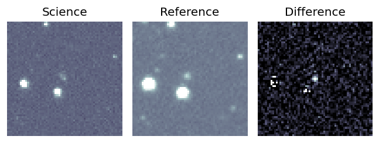
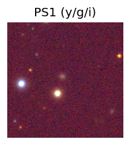

TESS: Sectors [16 17 57 84]
SDSS (<15 kpc):Found SDSS phot-z: z=0.13; peak abs mag = -19.08
PS1: 1 source in 3 arcsec Closest: d = 2.32 arcsec photoz=0.26+/-0.07 peak abs mag = -20.77
LegacySurvey: 0 sources in 3 arcsec
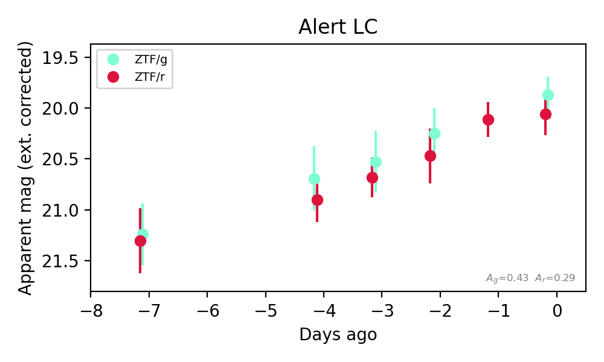
Extinction-corrected gr color:
From alerts: -0.19 +/- 0.27 mag
Consistent with synchrotron, g-r>0!
Rise Rate:
g: 0.2 mag/day
r: 0.2 mag/day
Fade Rate:
7. [ZTF] ZTF26abpdsdk (Afterglow?) [Back to Top] [Share] [Trigger Swift] [Fritz Alert] [Fritz Source] [Lasair]RA, Dec: 306.38672, -26.41944 20h25m32.81s, -26d-25m-9.99sGalactic (l, b): 17.09142, -31.40277 ext(g-r) = 0.06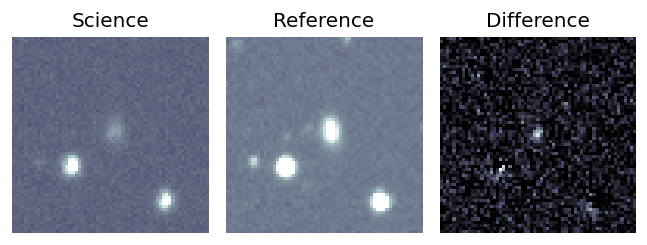
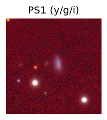
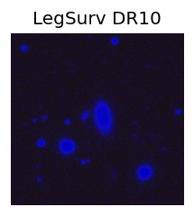
TESS: Sectors [ 27 92 116]
PS1: 0 sources in 3 arcsec
LegacySurvey: 0 sources in 3 arcsec
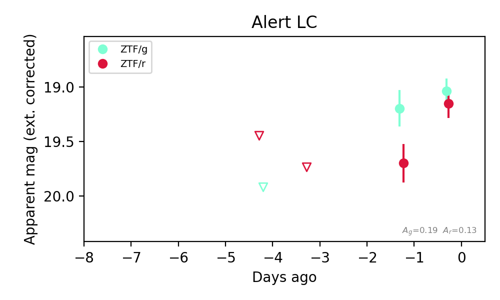
Extinction-corrected gr color:
From alerts: -0.12 +/- 0.17 mag
Consistent with synchrotron, g-r>0!
Rise Rate:
g: 0.25 mag/day
r: 0.58 mag/day
Fade Rate:
8. [ZTF] ZTF26abpnbff (FBOT?) [Back to Top] [Share] [Trigger Swift] [Fritz Alert] [Fritz Source] [Lasair]RA, Dec: 263.29288, 12.57108 17h33m10.29s, 12d34m15.88sGalactic (l, b): 35.71193, 22.96438 ext(g-r) = 0.14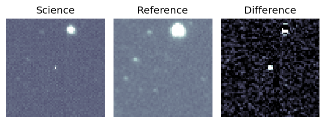
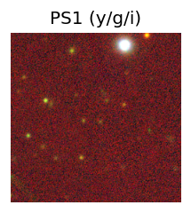
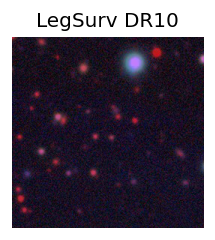
TESS: Sectors [ 79 118]
PS1: 0 sources in 3 arcsec
LegacySurvey: 1 sources in 3 arcsec Closest: d = 2.38 arcsec, 212.9 deg (east of north) photoz=0.39 (68% bounds 0.1, 1.23), type=PSF peak abs mag (ext. corrected) = -22.63 (68% bounds -19.37, -25.69)
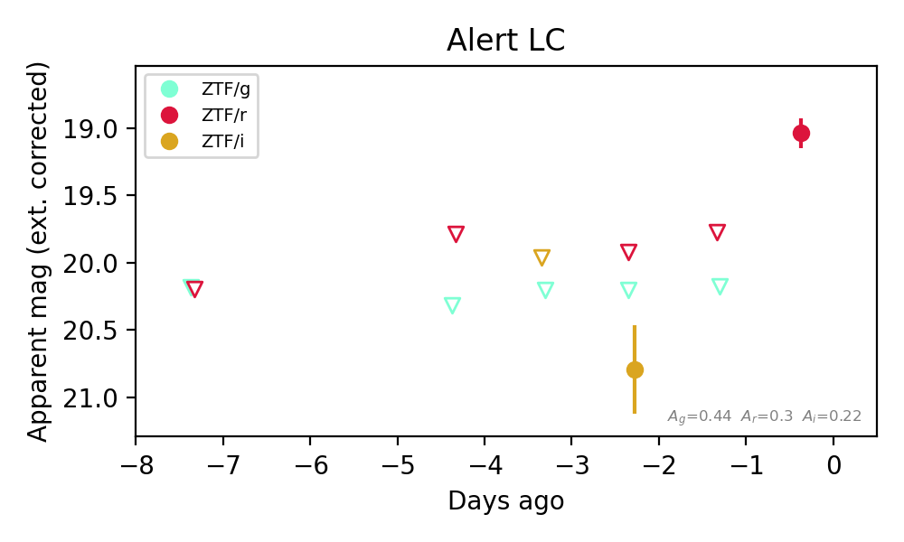
Extinction-corrected gi color:
From alerts: -0.59 +/- 99 mag
Extinction-corrected ri color:
From alerts: -0.87 +/- 99 mag
Rise Rate:
r: 0.76 mag/day
Fade Rate:
9. [ZTF] ZTF26abpnioi (FBOT?) [Back to Top] [Share] [Trigger Swift] [Fritz Alert] [Fritz Source] [Lasair]RA, Dec: 287.40999, 47.3583 19h 9m38.40s, 47d21m29.88sGalactic (l, b): 78.0973, 16.71383 ext(g-r) = 0.067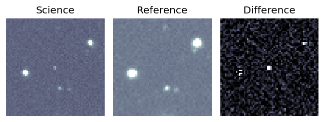
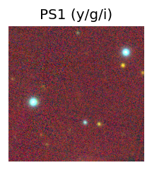
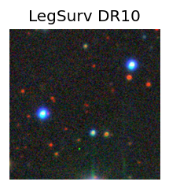
TESS: Sectors [ 14 15 26 40 41 53 54 55 74 75 80 81 82 119 120]
PS1: 0 sources in 3 arcsec
LegacySurvey: 1 sources in 3 arcsec Closest: d = 1.14 arcsec, 233.7 deg (east of north) photoz=0.93 (68% bounds 0.82, 1.01), type=REX peak abs mag (ext. corrected) = -23.89 (68% bounds -23.56, -24.1)
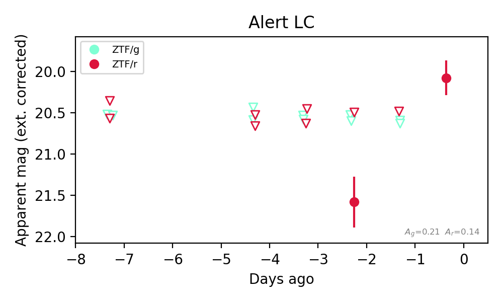
Extinction-corrected gr color:
From alerts: -0.99 +/- 99 mag
Rise Rate:
r: 0.79 mag/day
Fade Rate:
10. [ZTF] ZTF26abpnjcw (FBOT?) [Back to Top] [Share] [Trigger Swift] [Fritz Alert] [Fritz Source] [Lasair]RA, Dec: 269.84282, -11.96896 17h59m22.28s, -11d-58m-8.25sGalactic (l, b): 16.28229, 5.82759 ext(g-r) = 1.082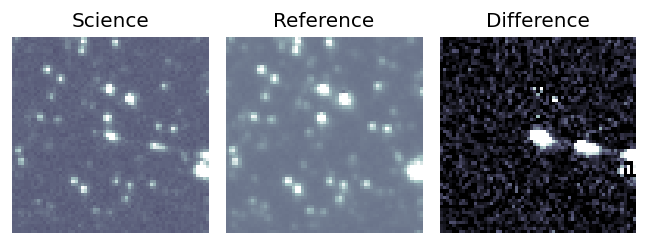
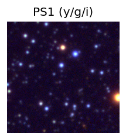

TESS: Sectors [ 80 91 92 118]
PS1: 1 source in 3 arcsec Closest: d = 1.18 arcsec photoz=1.00+/-0.39 peak abs mag = -29.31
LegacySurvey: 0 sources in 3 arcsec
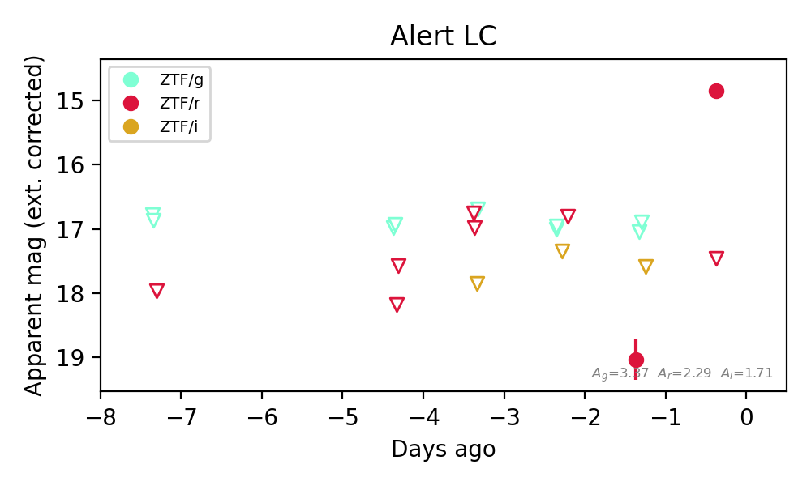
Extinction-corrected gr color:
From alerts: -1.99 +/- 99 mag
Extinction-corrected ri color:
From alerts: 1.44 +/- 99 mag
Rise Rate:
r: 4.16 mag/day
Fade Rate:
11. [ZTF] ZTF26abpnwae (Afterglow?) [Back to Top] [Share] [Trigger Swift] [Fritz Alert] [Fritz Source] [Lasair]RA, Dec: 302.17453, 11.23213 20h 8m41.89s, 11d13m55.68sGalactic (l, b): 52.07383, -11.53214 ext(g-r) = 0.165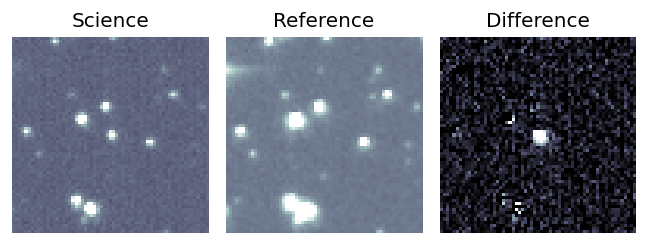
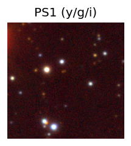

TESS: Sectors [54 81]
PS1: 1 source in 3 arcsec Closest: d = 4.55 arcsec photoz=0.39+/-0.06 peak abs mag = -24.09
LegacySurvey: 0 sources in 3 arcsec
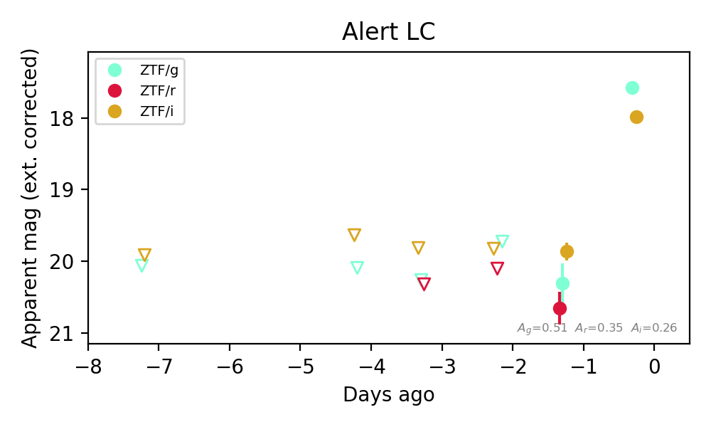
Extinction-corrected gr color:
From alerts: -0.35 +/- 0.36 mag
Extinction-corrected gi color:
From alerts: -0.41 +/- 0.09 mag
Extinction-corrected ri color:
From alerts: 0.79 +/- 0.26 mag
Consistent with synchrotron, g-r>0!
Rise Rate:
g: 2.76 mag/day
i: 1.92 mag/day
Fade Rate:
12. [ZTF] ZTF26abpqchi (FBOT?) [Back to Top] [Share] [Trigger Swift] [Fritz Alert] [Fritz Source] [Lasair]RA, Dec: 289.73458, 61.82853 19h18m56.30s, 61d49m42.72sGalactic (l, b): 92.88562, 20.58951 ext(g-r) = 0.076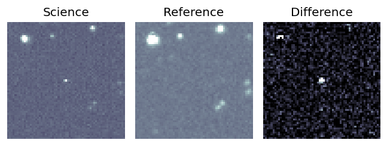
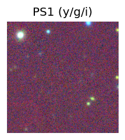
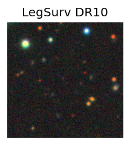
TESS: Sectors [ 14 15 16 17 18 19 20 21 22 23 24 25 26 40 41 47 48 49
50 51 52 53 54 55 56 57 58 59 60 73 74 75 76 77 78 79
80 81 82 83 84 85 86 117 118 119 120 121]
PS1: 0 sources in 3 arcsec
LegacySurvey: 1 sources in 3 arcsec Closest: d = 1.49 arcsec, 59.5 deg (east of north) photoz=0.9 (68% bounds 0.77, 1.04), type=REX peak abs mag (ext. corrected) = -24.17 (68% bounds -23.79, -24.57)
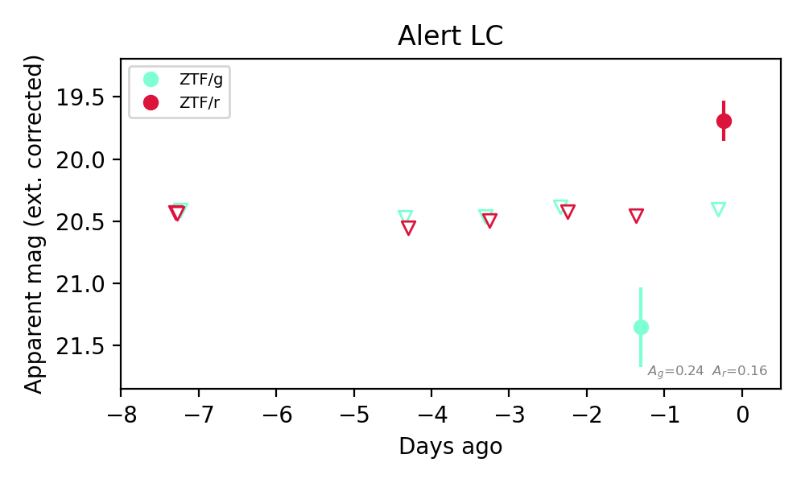
Extinction-corrected gr color:
From alerts: 0.72 +/- 99 mag
Rise Rate:
r: 0.68 mag/day
Fade Rate:
13. [ZTF] ZTF26abpqkcz (FBOT?) [Back to Top] [Share] [Trigger Swift] [Fritz Alert] [Fritz Source] [Lasair]RA, Dec: 326.99304, 46.6121 21h47m58.33s, 46d36m43.55sGalactic (l, b): 93.24674, -5.41334 ext(g-r) = 0.471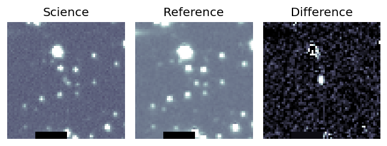
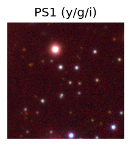

TESS: Sectors [ 15 16 56 76 121]
SDSS (<15 kpc):Found SDSS phot-z: z=0.04; peak abs mag = -17.49
PS1: 1 source in 3 arcsec Closest: d = 1.72 arcsec photoz=0.66+/-0.10 peak abs mag = -24.44
LegacySurvey: 0 sources in 3 arcsec
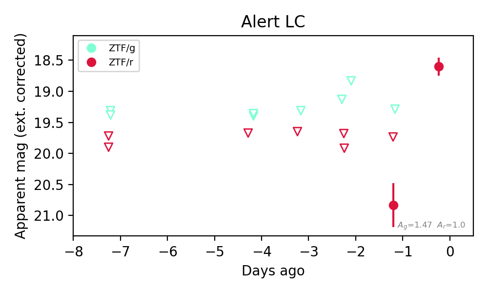
Extinction-corrected gr color:
From alerts: -1.55 +/- 99 mag
Rise Rate:
r: 2.33 mag/day
Fade Rate:
14. [ZTF] ZTF26abprknf (FBOT?) [Back to Top] [Share] [Trigger Swift] [Fritz Alert] [Fritz Source] [Lasair]RA, Dec: 3.28179, 25.83992 0h13m7.63s, 25d50m23.70sGalactic (l, b): 112.23267, -36.23463 ext(g-r) = 0.029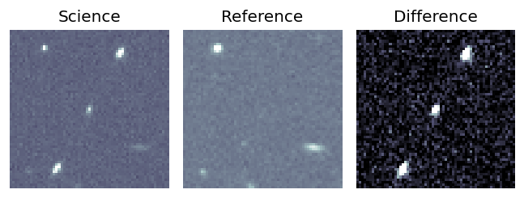
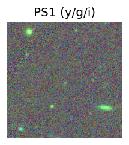
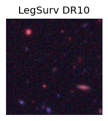
TESS: Sectors [17 57 84]
PS1: 0 sources in 3 arcsec
LegacySurvey: 1 sources in 3 arcsec Closest: d = 2.03 arcsec, 182.1 deg (east of north) photoz=0.67 (68% bounds 0.61, 0.72), type=EXP peak abs mag (ext. corrected) = -23.68 (68% bounds -23.46, -23.91)
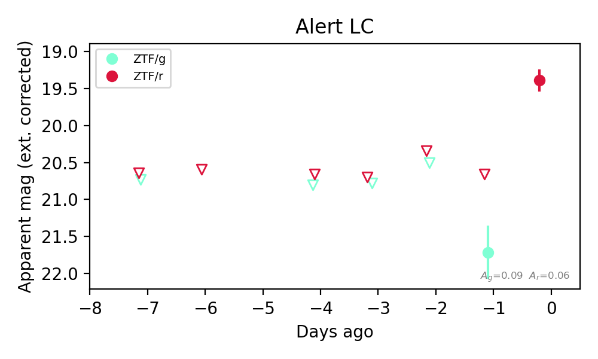
Extinction-corrected gr color:
From alerts: 1.06 +/- 99 mag
Rise Rate:
r: 1.32 mag/day
Fade Rate:
15. [ZTF] ZTF26abptnah (FBOT?) [Back to Top] [Share] [Trigger Swift] [Fritz Alert] [Fritz Source] [Lasair]RA, Dec: 342.70639, -7.42867 22h50m49.53s, -7d-25m-43.23sGalactic (l, b): 61.91488, -55.29117 WARNING: -0.08 deg from ecliptic plane ext(g-r) = 0.045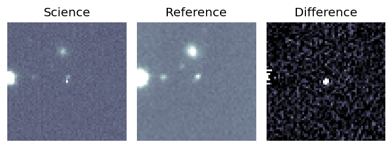
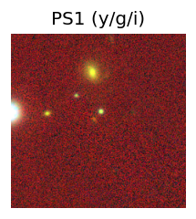
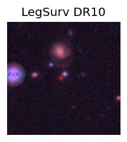
TESS: Sectors [42 70 92]
PS1: 0 sources in 3 arcsec
LegacySurvey: 1 sources in 3 arcsec Closest: d = 1.69 arcsec, 85.8 deg (east of north) photoz=0.82 (68% bounds 0.79, 0.86), type=DEV peak abs mag (ext. corrected) = -25.01 (68% bounds -24.91, -25.12)
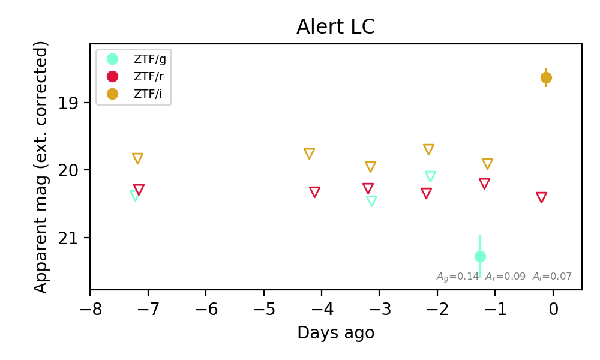
Extinction-corrected gr color:
From alerts: 1.08 +/- 99 mag
Extinction-corrected gi color:
From alerts: 1.37 +/- 99 mag
Extinction-corrected ri color:
From alerts: 1.78 +/- 99 mag
Rise Rate:
i: 1.25 mag/day
Fade Rate: